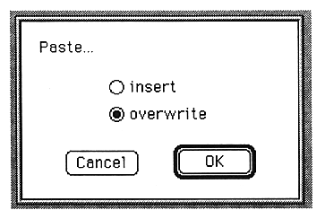

Return to previous page
｜
Return to menu
｜
Go to next page
●Paste
Pastes the image on the clipboard to the image you are working on. The following window is displayed.

The parameters set in this window are as follows:
insert
Insert data at the cursor.
overwrite
Overwrites the cursor with data.
Zoom In
Increases the waveform display rate.
You can enlarge up to 32768 times.
Zoom Out
Decrease the waveform display rate.
The display size when opened is the minimum.
●Fit Selection
Zooms in on the selected part.
●Select All
Selects all waveforms on the edit window.
●Select Loop
Selects only the loop portion of the waveform on the edit window.
Return to previous page
｜
Return to menu
｜
Go to next page